Spectacular Spider-Man (1987 - 2011)
| Comic Book | Release Date | Cover |
|---|---|---|
| Spectacular Spider-Man #-1 That Thompson Boy! |  | |
| Spectacular Spider-Man #134 Sin-Cere | 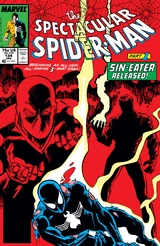 | |
| Spectacular Spider-Man #135 Sin-Thesis | 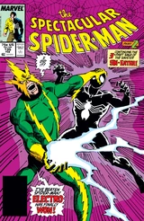 | |
| Spectacular Spider-Man #136 Sin-ister | 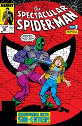 | |
| Spectacular Spider-Man #137 Nowhere to Run, Nowhere to Hide! | 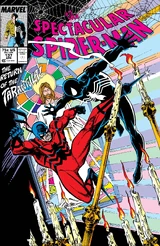 | |
| Spectacular Spider-Man #138 Night of the Flag! | 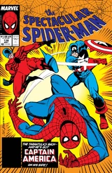 | |
| Spectacular Spider-Man #139 Grave Memory | 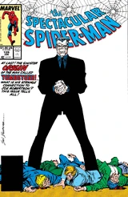 | |
| Spectacular Spider-Man #140 Kill Zone | 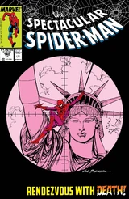 | |
| Spectacular Spider-Man #141 The Tombstone Testament | 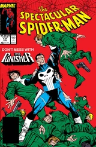 | |
| Spectacular Spider-Man #142 Will! | 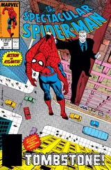 | |
| Spectacular Spider-Man #143 Deadline in Dallas | 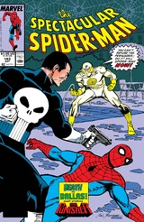 | |
| Spectacular Spider-Man #144 An Ill Wind... | 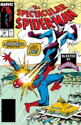 | |
| Spectacular Spider-Man #145 The Boomerang Return | 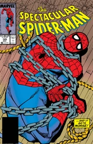 | |
| Spectacular Spider-Man #146 Demon Night | 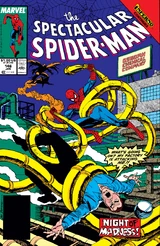 | |
| Spectacular Spider-Man #147 When the Bugle Blows | 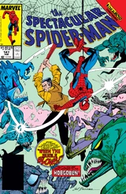 | |
| Spectacular Spider-Man #148 Night of the Living Ned! | 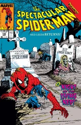 | |
| Spectacular Spider-Man #149 What About Carrion?! | 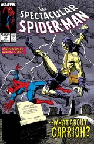 | |
| Spectacular Spider-Man #150 Guilty! | 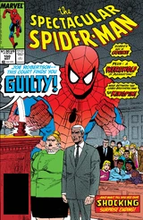 | |
| Spectacular Spider-Man #151 Lock-Up | 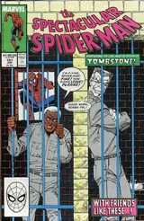 | |
| Spectacular Spider-Man #152 A Wolf's Tale | 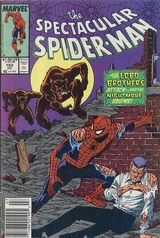 | |
| Spectacular Spider-Man #153 Siege | 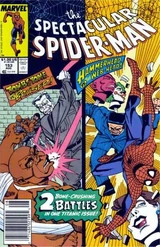 | |
| Spectacular Spider-Man #154 Claws | 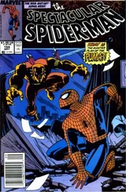 | |
| Spectacular Spider-Man #155 Crash Out! | 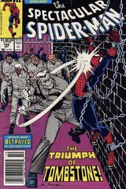 | |
| Spectacular Spider-Man #156 The Search for Robbie Robertson | 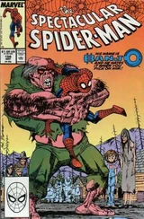 | |
| Spectacular Spider-Man #157 Shakedown | 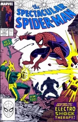 | |
| Spectacular Spider-Man #158 The Paste and the Power (Or a Very Sticky Situation) | 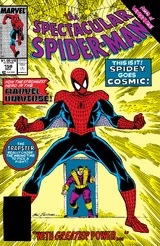 | |
| Spectacular Spider-Man #159 These Shattered Senses Or A Tale of the Brothers Grimm | 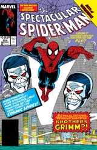 | |
| Spectacular Spider-Man #160 The Metal in Men's Souls | 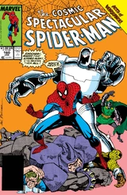 | |
| Spectacular Spider-Man #161 Pardoned! | 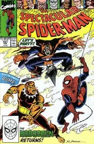 | |
| Spectacular Spider-Man #162 The Demon and the Dead Man | 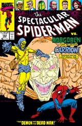 | |
| Spectacular Spider-Man #163 The Carrion Cure | 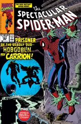 | |
| Spectacular Spider-Man #164 Bugged | 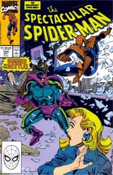 | |
| Spectacular Spider-Man #165 Knight and Fogg | 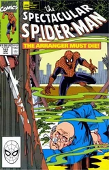 | |
| Spectacular Spider-Man #166 The Deadly Lads From Liverpool | 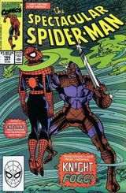 | |
| Spectacular Spider-Man #167 A Misty Kind of Memory | 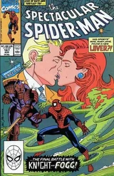 | |
| Spectacular Spider-Man #168 Sleeping Dogs | 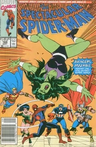 | |
| Spectacular Spider-Man #169 The Outlaw Trail | 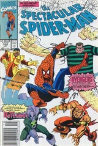 | |
| Spectacular Spider-Man #170 The Final Calculation | 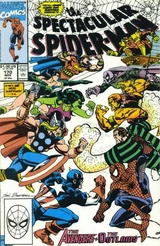 | |
| Spectacular Spider-Man #171 Ordeal | 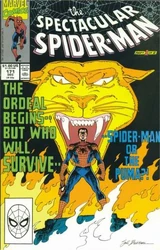 | |
| Spectacular Spider-Man #172 Savage Showdown | 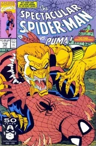 | |
| Spectacular Spider-Man #173 Creatures Stirring | 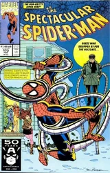 | |
| Spectacular Spider-Man #174 Dedication (Or, "Jonah Goes to Pieces!") | 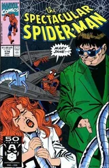 | |
| Spectacular Spider-Man #175 Spouse Trap | 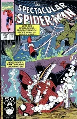 | |
| Spectacular Spider-Man #176 The Love of Power | 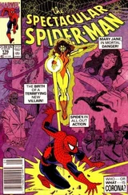 | |
| Spectacular Spider-Man #177 Fever Pitch | 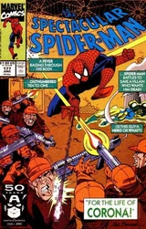 | |
| Spectacular Spider-Man #178 Up From the Depths | 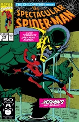 | |
| Spectacular Spider-Man #179 Wounds | 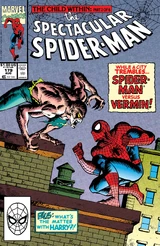 | |
| Spectacular Spider-Man #180 Shame | 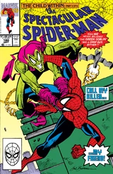 | |
| Spectacular Spider-Man #181 Guilt | 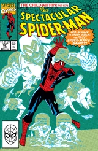 | |
| Spectacular Spider-Man #182 Reckonings | 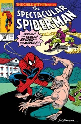 | |
| Spectacular Spider-Man #183 Into the Dawn! | 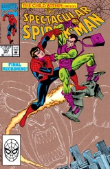 | |
| Spectacular Spider-Man #184 Aftermath | ||
| Spectacular Spider-Man #185 Another Fine Mess! | ||
| Spectacular Spider-Man #186 Settling Scores | ||
| Spectacular Spider-Man #187 Desperate Measures | ||
| Spectacular Spider-Man #188 Final Judgment | ||
| Spectacular Spider-Man #189 The Osborn Legacy | ||
| Spectacular Spider-Man #190 The Horns of a Dilemma! | ||
| Spectacular Spider-Man #191 The Valley | ||
| Spectacular Spider-Man #192 The Summit | ||
| Spectacular Spider-Man #193 Over the Edge | ||
| Spectacular Spider-Man #194 October Moon | ||
| Spectacular Spider-Man #195 Masquerade | ||
| Spectacular Spider-Man #196 Faces | ||
| Spectacular Spider-Man #197 Power Play! | ||
| Spectacular Spider-Man #198 Castles in the Air! | ||
| Spectacular Spider-Man #199 Falling! | ||
| Spectacular Spider-Man #200 Best of Enemies | ||
| Spectacular Spider-Man #201 Over the Line! | ||
| Spectacular Spider-Man #202 The Turning Point! | ||
| Spectacular Spider-Man #203 War of the Heart | ||
| Spectacular Spider-Man #204 Takeover! | ||
| Spectacular Spider-Man #205 Search and Destroy | ||
| Spectacular Spider-Man #206 Fatal Desire! | ||
| Spectacular Spider-Man #207 Screaming Crimson | ||
| Spectacular Spider-Man #208 Fear Eats the Soul | ||
| Spectacular Spider-Man #209 Foreign Objects | ||
| Spectacular Spider-Man #210 Crashing | ||
| Spectacular Spider-Man #211 Face Value | ||
| Spectacular Spider-Man #212 Rain Dance | ||
| Spectacular Spider-Man #213 Typhoid Attack | ||
| Spectacular Spider-Man #214 Bloody Justice | ||
| Spectacular Spider-Man #215 The Monster Within | ||
| Spectacular Spider-Man #216 Time Is On No Side! | ||
| Spectacular Spider-Man #217 Power and Responsibility - Part Four: Higher Ground | ||
| Spectacular Spider-Man #218 When Monsters Roam! | ||
| Spectacular Spider-Man #219 Two of a Kind | ||
| Spectacular Spider-Man #220 A Time to Live! | ||
| Spectacular Spider-Man #221 A Time to Die! | ||
| Spectacular Spider-Man #222 False Truths | ||
| Spectacular Spider-Man #223 Aftershocks, Part II: Schemes & Dreams: For Future Screams | ||
| Spectacular Spider-Man #224 The Assassin with My Face! | ||
| Spectacular Spider-Man #225 The Return of the Green Goblin | ||
| Spectacular Spider-Man #226 The Final Verdict | ||
| Spectacular Spider-Man #227 If Death Be My Destiny! | ||
| Spectacular Spider-Man #228 Run for Your Life! | ||
| Spectacular Spider-Man #229 No More The Hero | ||
| Spectacular Spider-Man #230 Brother's Keeper | ||
| Spectacular Spider-Man #231 Reluctant Lazarus | ||
| Spectacular Spider-Man #232 A Show of Force or Clones, Bones, and Doc Ock! | ||
| Spectacular Spider-Man #233 Inner Demons | ||
| Spectacular Spider-Man #234 Leap of Faith | ||
| Spectacular Spider-Man #235 Puppets | ||
| Spectacular Spider-Man #236 Free Will | ||
| Spectacular Spider-Man #237 Little Deaths | ||
| Spectacular Spider-Man #238 Suicidal Tendencies | ||
| Spectacular Spider-Man #239 Sudden Sacrifices | ||
| Spectacular Spider-Man #240 Walking Into Spiderwebs | ||
| Spectacular Spider-Man #241 A New Day Dawning | ||
| Spectacular Spider-Man #242 Facedancing | ||
| Spectacular Spider-Man #243 Who Am I? | ||
| Spectacular Spider-Man #244 Backlash | ||
| Spectacular Spider-Man #245 Kravinov's Revenge! | ||
| Spectacular Spider-Man #246 The Legion of Losers! | ||
| Spectacular Spider-Man #247 Mad Jack | ||
| Spectacular Spider-Man #248 From the Shadows | ||
| Spectacular Spider-Man #249 Into the Light | ||
| Spectacular Spider-Man #250 Citizen Osborn | ||
| Spectacular Spider-Man #251 Son of the Hunter! | ||
| Spectacular Spider-Man #252 Son of the Hunter! Part 2 | ||
| Spectacular Spider-Man #253 Son of the Hunter! Part 3 | ||
| Spectacular Spider-Man #254 Angst! | ||
| Spectacular Spider-Man #255 Something Goblin This Way Comes | ||
| Spectacular Spider-Man #256 Through the Looking Glass | ||
| Spectacular Spider-Man #257 Prodigy | ||
| Spectacular Spider-Man #258 Man of the People | ||
| Spectacular Spider-Man #259 Survivor of the Big Lie! | ||
| Spectacular Spider-Man #260 Spider in the Middle | ||
| Spectacular Spider-Man #261 Bad Business | ||
| Spectacular Spider-Man #262 The Gathering of Five Part Four: A Day in the Life | ||
| Spectacular Spider-Man #263 The Final Chapter Part 3 of 4: The Triumph of the Goblin | ||
| Spectacular Spider-Man #1000 Spider-Man & The Punisher: One Shot |